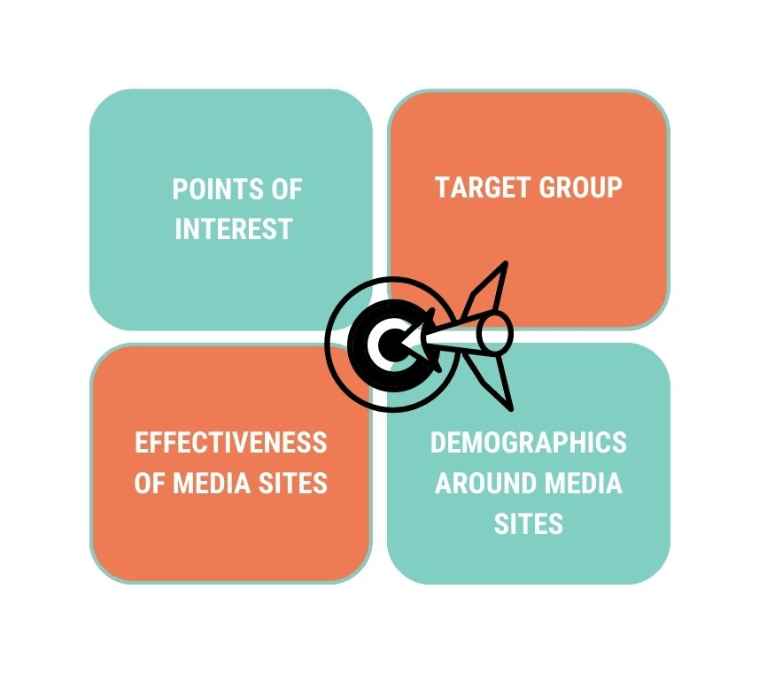
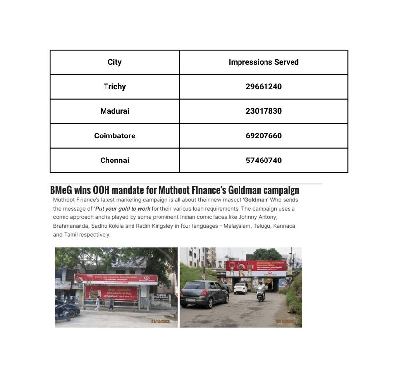

Muthoot Finance Goldman Campaign by BHARAT MEDIA GROUP
Muthoot Finance
Problem Statement
Muthoot Finance is facing challenges in driving awareness and acquisition for its Goldman campaign in South India's competitive financial market. The goal is to create a memorable and impactful OOH campaign that effectively differentiates the Muthoot Finance's Goldman offering and resonates with the target audience. Key challenges include developing a strong messaging strategy, identifying high-impact OOH locations, creating captivating ad content, and measuring campaign success through metrics such as brand awareness and revenue generation for the Muthoot Finance Goldman campaign. Maximizing impact through OOH advertising is crucial for Muthoot Finance to establish a strong presence and drive success for its Muthoot Finance Goldman campaign in South India.
The Approach
Bharat Media Group used its partner- AdMAVIN platform and developed the approach with focus on-
- Leverage POIs: Utilize AdMAVIN's advanced analytics to identify the areas of interest for Muthoot Finance Goldman's Target Audience in South India. Pinpoint high-traffic, high- visibility locations to grab the attention of potential customers and maximize the impact of the OOH campaign.
- Define Target Group: With AdMAVIN's in-depth analysis capabilities, research the target audience's demographics, preferences, and needs to craft a messaging strategy that resonates with them. Ensure that the OOH campaign reaches the right audience for maximum effectiveness.
- Optimize Media Sites: AdMAVIN's media planning and optimization tools evaluate the impact and reach of various OOH media sites in South India. Choose the best media sites for Muthoot Goldman's campaign based on metrics such as dwell time, visibility, and engagement.
- Tailor to Demographics: AdMAVIN's demographic analysis provides insights into the people near the selected media sites. Use this information to tailor the Muthoot Goldman campaign to the right audience and generate the desired outcome.
- Focus on Media Sites near POS: Strategize a media plan that targets media sites located near the point of sales of both Muthoot Finance and its competitors. This will help in reaching out to the target audience effectively and establishing a strong presence in the competitive financial market of South India.
The Solution
- Locate Points of Interests(POI) : As outlined in approach, utilizing the AdMAVIN tool, BMeG conducted an analysis to compile a comprehensive list of all Muthoot Finance and its rival's point-of-sale locations, thereby providing a robust representation of the Out-of-Home industry landscape.
- Estimate Right Target Groups : By leveraging the AdMAVIN tool, the target demographic for Muthoot Finance's Goldloan product was determined to be SEC B (Socioeconomic Group B) based on the economic attribution towards Points of Interests.
- Media Sites Overlay: The subsequent step was to identify media sites that not only aligned with the desired Points of Interests but also met the requirements of the Target Groups.
- Choose best media sites by evaluating its effectiveness:With the utilization of the AdMAVIN tool, several key parameters were analyzed, including OTS (Impressions served by media sites), Dwell Time offered by the media sites etc. as demonstrated-

Impact of Muthoot BMeG OOH Campaign
The effectiveness of an out-of-home advertising campaign can be evaluated by assessing its reach and impact on the target audience. In a recent 30-day advertising effort by Muthoot Finance, the goal was to maximize exposure and generate high levels of engagement among target audiences, as evidenced by the targeted impression numbers shown in table-
Muthoot Finance's out-of-home advertising campaigns not only delivered impressive numbers, but also sparked conversation and buzz in the media.